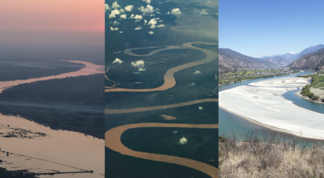

아마존: 아마존 강은 강수량에 따라 계절별로 다르게 보입니다. 건기(6월~11월)에는 물이 줄어들면서 강변의 다양한 지형이 드러나고, 습기 많은 우기(12월~5월)에는 강물이 불어나 주변의 열대우림이 물에 잠겨 풍부한 생태계를 볼 수 있다.
나일: 나일 강은 일년 내내 아름답지만, 겨울(11월~2월)에는 온화한 기후로 인해 여행하기 가장 좋다.
양쯔: 양쯔강의 아름다움은 계절에 따라 다릅니다. 봄(3월~5월)과 가을(9월~11월)에는 날씨가 온화하고, 강 주변의 경치가 특히 아름답다.
